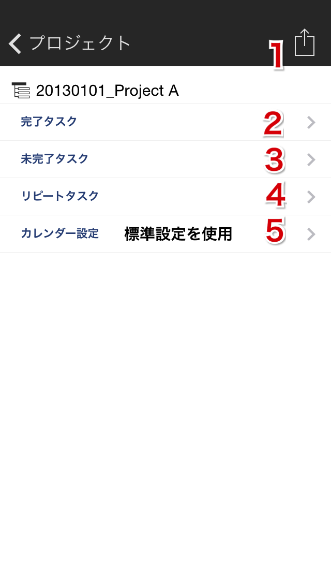
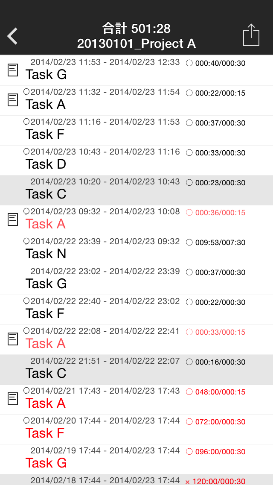
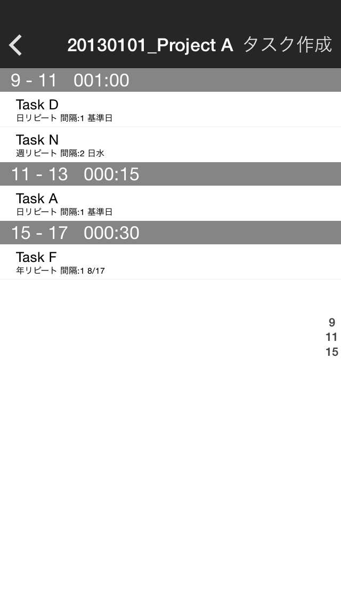

プロジェクト詳細

- アクション実行
- →プロジェクトタスクログ一覧：Task Log
- →プロジェクト未実行タスク一覧：Unexecuted Task
- →プロジェクトリピートタスク一覧：Repeat Task
- →プロジェクト出力カレンダー設定：Calendar Setting
プロジェクトタスクログ一覧

- アクション実行
- →タスク詳細：行選択
プロジェクト未実行タスク一覧
- →タスク詳細：行選択
プロジェクトリピートタスク一覧

- タスク作成モード
- 全選択：SelectAll
- 選択したリピートタスクからタスク作成：Done
- タスクの作成：行長押し
- →リピート詳細：行選択
プロジェクト出力カレンダー設定
→Help Topへ →Taskuma Topへ